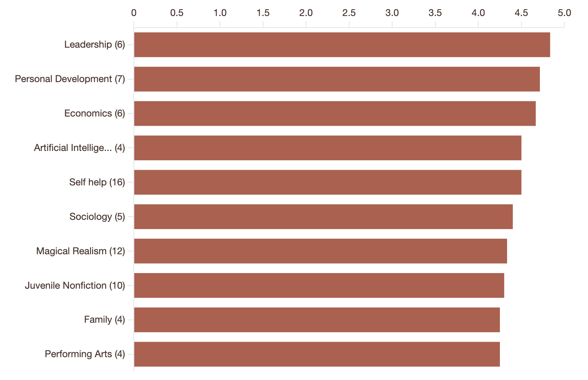
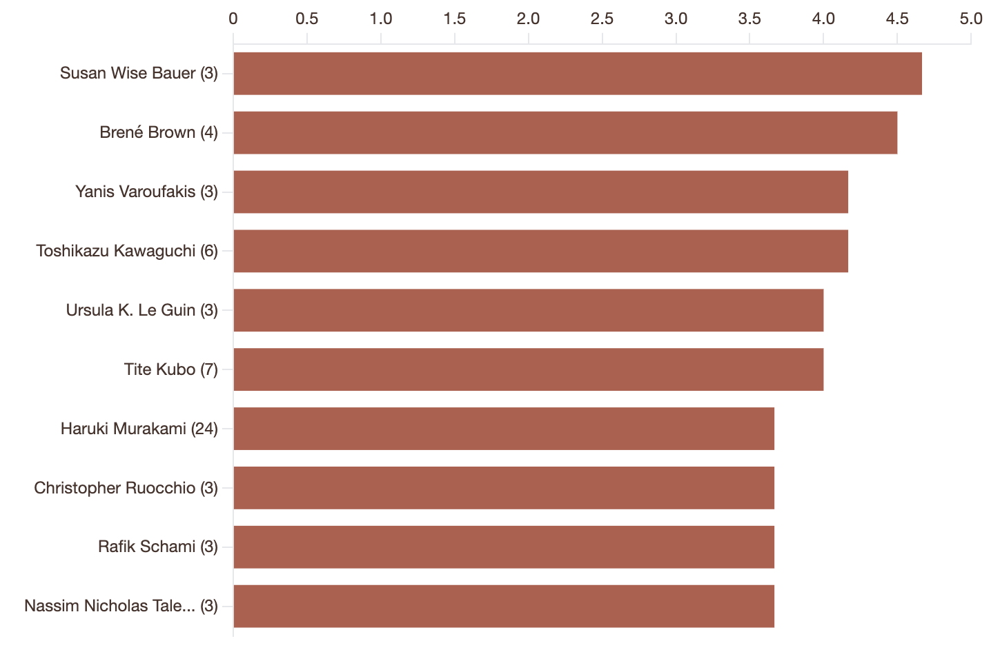
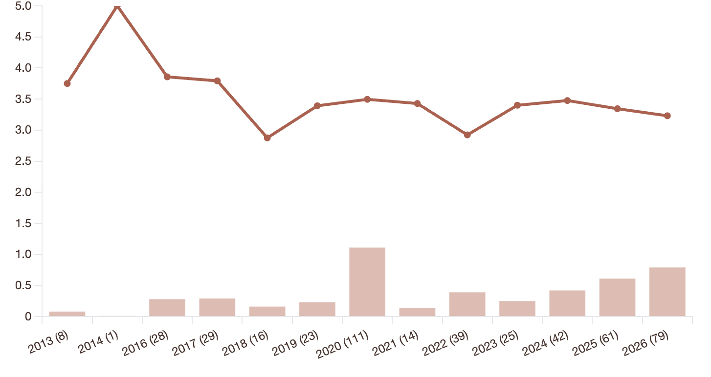

- BookCharts Book tracking and visualization tool, built with Angular & Tailwind
- Dailang Language learning tool, built with Angular & Tailwind
- Moodapy Mood and habit tracker, built with Angular & Tailwind
- Color Combinations A color palette selector based on Sanzo Wada's Dictionary of Color Combinations
- Journal Local private journal, built with SvelteKit
- JomoBrief Brief news digest, built with Angular & Tailwind
- People in Dresden Frontend for the People in Dresden Facebook page, built with Vue.js & Tailwind
- Sprachsynthese Information visualization uni project, built with Vue.js, TypeScript and Bootstrap
- Lake Bled Small training project, built with CSS, jQuery and Materialize
- Shopping List Angular training project with Bootstrap
- Event Calendar First group uni project, built with vanilla HTML, CSS and JavaScript
No project has all of these tags.
I'm a software developer who likes building software that's performant, secure, looks good, and feels good to use.
I have a degree in Media Computer Science with a focus on UI/UX development and human-computer interaction. I'm curious about how technology affects us and our perception, and enjoy reading books about those topics.
I'm also currently learning and utilizing AI in professional and personal projects.
I've been developing professional web applications since 2017, and currently build and maintain medical software at tech@spree GmbH.
For more on my career, or to get in touch, check out my LinkedIn.
on reading books
I've loved reading since I was a teenager, starting with Harry Potter. I drifted away from it for a while and rediscovered that love around 2013.
I track my books on Goodreads. To visualize that data, I drew on my uni education and years of building charts for companies to develop my own app.
It's called BookCharts. I came up with the concept in 2020, started development in 2023, and in 2026 it evolved rapidly with the rise of AI agents. For now, it's for private use only.
To make book friends and contribute to Berlin's lively book scene, I also host the Berlin Book Swap every two weeks. It's free, it's cozy, and you're welcome to join us and nerd out about books.
Some charts from BookCharts:



on learning languages
Having lived and studied in Germany since 2011, I became fluent in German and use it professionally, but in my private life and for reading I mostly use English.
My Japanese journey started in 2023, after I finished my studies, and pulled me deep into the world of language learning. I created Dailang to help me read books and turn new words into flashcards.
Languages I speak or am learning:
- Arabic
- native
- English
- fluent
- German
- fluent
- Japanese
- good reading comprehension
- Spanish
- beginner
- Portuguese
- beginner